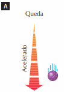

Cinemática: física - Queda Livre
O movimento vertical de um corpo próximo ao solo é chamado de queda livre quando o corpo é abandonado no vácuo ou se considera desprezível a ação do ar. Seu estudo é idêntico ao de um lançamento na vertical, o qual difere da queda livre somente por apresentar uma velocidade inicial vertical e eles são descritos pelas mesmas funções horárias. A aceleração do movimento vertical de um corpo no vácuo é denominada aceleração da gravidade e indicada por G. Como o movimento se realiza nas proximidades da superfície terrestre, a aceleração da gravidade é considerada constante. Assim, a queda livre e o lançamento na vertical são movimentos uniformemente variados (MUV).

Esse é o valor da aceleração da gravidade, tomado ao nivel do mar e a latitude de 45 graus. Na queda, o módulo da velocidade escalar do corpo aumenta: o movimento é acelerado. Lançado verticalmente para cima, o módulo da velocidade escalar diminui na subida: o movimento é retardado
À medida que o corpo lançado verticalmente para cima sobe , sua velocidade escalar decresce em módulo até se anular na altura máxima. Nesse instante ocorre mudança do sentido do movimento e o móvel passa a descer em movimento acelerado.

Estudemos os sinais da velocidade escalar e da aceleração escalar segundo convenções algébricas. Para isso, orientamos a trajetória para cima (A). Segundo essa orientação, a velocidade escalar é positiva na subida e negativa na descida(B). Na subida, o movimento é retardado e a aceleração escalar é negativa, pois v e a devem ter sinais contrários(C) . Na descida, o movimento é acelerado e a aceleração escalar contínua negativa, pois a e v devem ter o mesmo sinal (D).


Gráficos do MU e do MUV
Construções gráficas com duas variáveis são feitas no chamado plano cartesiano. É o plano constituído por dois eixos x e y, perpendiculares entre si, que se interceptam num ponto denominado origem (A). A um ponto P associamos um par ordenado (x, y) de números reais, chamado coordenadas do ponto P (B). A coordenada x é chamada abscissa do ponto P (C) e a coordenada y é a ordenada de P (D).
Função constante
É a função do tipo y 5 k, sendo k um número real. Exemplos: Y=5; Y= -3.0. O gráfico de uma função constante é uma reta paralela ao eixo x que passa pelo ponto (X=0,Y=K). Quando um ponto material está em repouso (por exemplo, no km 100 de uma rodovia), seu espaço S é constante com o tempo . A velocidade escalar V de um movimento uniforme é uma função constante com o tempo, bem como a aceleração escalar a de um MUV.
Função do 1º grau
Função do 1º grau é a função da forma y = a 1 + bx, na qual a e b são números reais, sendo b ≠ 0. O gráfico de uma função do 1º grau é uma reta que passa pelo ponto (0, a).
Função do 2º grau
Função do 2º grau é a função da forma y = a + bx 1 cx2 , na qual a, b e c são números reais, sendo c≠0. O gráfico de uma função do 2º grau é uma parábola. Se o coeficiente c é positivo, a parábola tem concavidade voltada para cima (A) se c é negativo, a concavidade é voltada para baixo (B).
Coeficiente angular da reta
Na função do 1º grau y = a + bx, o número real b é chamado coeficiente angular da reta representada no plano cartesiano. O coeficiente angular b está associado ao ângulo J entre a reta e o eixo x.
Cálculo de áreas
No movimento uniforme, a velocidade escalar é uma função constante com o tempo. Nesse gráfico, a área A é numericamente igual à variação do espaço (S) no intervalo de tempo t1 a t2.
Essa propriedade é válida em qualquer tipo de movimento. No gráfico da velocidade escalar em função do tempo,a área A da região delimitada pela curva e pelo eixo das abscissas é numericamente igual à variação do espaço (S) do móvel nesse intervalo de tempo.
No movimento uniformemente variado (MUV), a aceleração escalar é uma função constante com o tempo. Nesse gráfico, a área A é numericamente igual à variação da velocidade V no intervalo de tempo t1 a t2.
Essa propriedade é válida em qualquer tipo de movimento. No gráfico da aceleração escalar em função do tempo, a área A da região delimitada pela curva e pelo eixo das abscissas é numericamente igual à variação da velocidade (V) do móvel nesse intervalo de tempo.